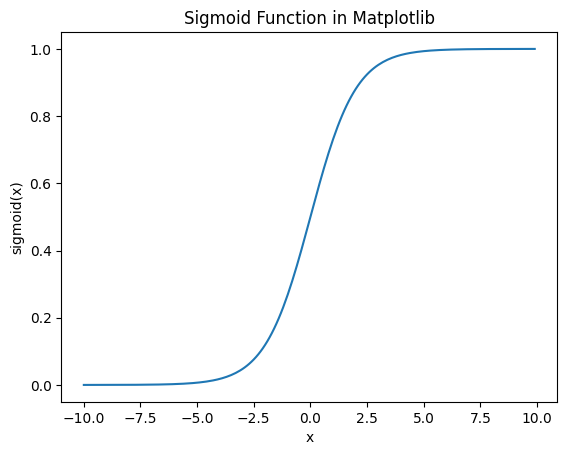

Logistic Regression
Contents
%%html
<!-- The customized css for the slides -->
<link rel="stylesheet" type="text/css" href="../styles/python-programming-introduction.css"/>
<link rel="stylesheet" type="text/css" href="../styles/basic.css"/>
<link rel="stylesheet" type="text/css" href="../../assets/styles/basic.css" />
40.13. Logistic Regression#
40.13.1. Introduction#
In fact, logistic regression is a classification algorithm, unlike other regression models.
Logistic Regression is very important for entering deep learning.
After understanding this topic, you will be able to easily learning to Artificial Neural Network.
40.13.2. Importing the libraries#
%matplotlib inline
import numpy as np
import matplotlib.pyplot as plt
import pandas as pd
40.13.3. Sigmoid function#
def sigmoid(x):
return 1.0 / (1.0 + np.exp(-x))
values = np.arange(-10, 10, 0.1)
plt.plot(values, sigmoid(values))
plt.xlabel('x')
plt.ylabel('sigmoid(x)')
plt.title('Sigmoid Function in Matplotlib')
plt.show()

40.13.4. Importing the dataset#
dataset = pd.read_csv('../../assets/data/Social_Network_Ads.csv')
X = dataset.iloc[:, :-1].values
y = dataset.iloc[:, -1].values
dataset
| Age | EstimatedSalary | Purchased | |
|---|---|---|---|
| 0 | 19 | 19000 | 0 |
| 1 | 35 | 20000 | 0 |
| 2 | 26 | 43000 | 0 |
| 3 | 27 | 57000 | 0 |
| 4 | 19 | 76000 | 0 |
| ... | ... | ... | ... |
| 395 | 46 | 41000 | 1 |
| 396 | 51 | 23000 | 1 |
| 397 | 50 | 20000 | 1 |
| 398 | 36 | 33000 | 0 |
| 399 | 49 | 36000 | 1 |
400 rows × 3 columns
40.13.5. Splitting the dataset into the Training set and Test set#
from sklearn.model_selection import train_test_split
X_train, X_test, y_train, y_test = train_test_split(X, y, test_size = 0.25, random_state = 0)
40.13.6. Feature Scaling#
from sklearn.preprocessing import StandardScaler
sc = StandardScaler()
X_train = sc.fit_transform(X_train)
X_test = sc.transform(X_test)
40.13.7. Training the Logistic Regression model on the Training set#
from sklearn.linear_model import LogisticRegression
classifier = LogisticRegression(random_state = 0)
classifier.fit(X_train, y_train)
LogisticRegression(random_state=0)In a Jupyter environment, please rerun this cell to show the HTML representation or trust the notebook.
On GitHub, the HTML representation is unable to render, please try loading this page with nbviewer.org.
LogisticRegression(random_state=0)
40.13.8. Predicting a new result#
print(classifier.predict(sc.transform([[30, 87000], [65, 990000]])))
[0 1]
40.13.9. Predicting the Test set results#
y_pred = classifier.predict(X_test)
print(np.concatenate((y_pred.reshape(len(y_pred),1), y_test.reshape(len(y_test),1)), 1))
[[0 0]
[0 0]
[0 0]
[0 0]
[0 0]
[0 0]
[0 0]
[1 1]
[0 0]
[1 0]
[0 0]
[0 0]
[0 0]
[0 0]
[0 0]
[0 0]
[0 0]
[0 0]
[1 1]
[0 0]
[0 0]
[1 1]
[0 0]
[1 1]
[0 0]
[1 1]
[0 0]
[0 0]
[0 0]
[0 0]
[0 0]
[0 1]
[1 1]
[0 0]
[0 0]
[0 0]
[0 0]
[0 0]
[0 0]
[1 1]
[0 0]
[0 0]
[0 0]
[0 0]
[1 1]
[0 0]
[0 0]
[1 1]
[0 0]
[1 1]
[1 1]
[0 0]
[0 0]
[0 0]
[1 1]
[0 1]
[0 0]
[0 0]
[0 1]
[0 0]
[0 0]
[1 1]
[0 0]
[0 1]
[0 0]
[1 1]
[0 0]
[0 0]
[0 0]
[0 0]
[1 1]
[0 0]
[0 0]
[0 1]
[0 0]
[0 0]
[1 0]
[0 0]
[1 1]
[1 1]
[1 1]
[1 0]
[0 0]
[0 0]
[1 1]
[1 1]
[0 0]
[1 1]
[0 1]
[0 0]
[0 0]
[1 1]
[0 0]
[0 0]
[0 0]
[0 1]
[0 0]
[0 1]
[1 1]
[1 1]]
40.13.10. Making the Confusion Matrix#
from sklearn.metrics import confusion_matrix, accuracy_score
cm = confusion_matrix(y_test, y_pred)
print(cm)
accuracy_score(y_test, y_pred)
[[65 3]
[ 8 24]]
0.89
40.13.11. Visualising the Training set results#
from matplotlib.colors import ListedColormap
X_set, y_set = sc.inverse_transform(X_train), y_train
X1, X2 = np.meshgrid(np.arange(start = X_set[:, 0].min() - 10, stop = X_set[:, 0].max() + 10, step = 0.5),
np.arange(start = X_set[:, 1].min() - 1000, stop = X_set[:, 1].max() + 1000, step = 0.5))
plt.contourf(X1, X2, classifier.predict(sc.transform(np.array([X1.ravel(), X2.ravel()]).T)).reshape(X1.shape),
alpha = 0.75, cmap = ListedColormap(('red', 'green')))
plt.xlim(X1.min(), X1.max())
plt.ylim(X2.min(), X2.max())
for i, j in enumerate(np.unique(y_set)):
plt.scatter(X_set[y_set == j, 0], X_set[y_set == j, 1], c = ListedColormap(('red', 'green'))(i), label = j)
plt.title('Logistic Regression (Training set)')
plt.xlabel('Age')
plt.ylabel('Estimated Salary')
plt.legend()
plt.show()
*c* argument looks like a single numeric RGB or RGBA sequence, which should be avoided as value-mapping will have precedence in case its length matches with *x* & *y*. Please use the *color* keyword-argument or provide a 2D array with a single row if you intend to specify the same RGB or RGBA value for all points.
*c* argument looks like a single numeric RGB or RGBA sequence, which should be avoided as value-mapping will have precedence in case its length matches with *x* & *y*. Please use the *color* keyword-argument or provide a 2D array with a single row if you intend to specify the same RGB or RGBA value for all points.
40.13.12. Visualising the Test set results#
from matplotlib.colors import ListedColormap
X_set, y_set = sc.inverse_transform(X_test), y_test
X1, X2 = np.meshgrid(np.arange(start = X_set[:, 0].min() - 10, stop = X_set[:, 0].max() + 10, step = 0.5),
np.arange(start = X_set[:, 1].min() - 1000, stop = X_set[:, 1].max() + 1000, step = 0.5))
plt.contourf(X1, X2, classifier.predict(sc.transform(np.array([X1.ravel(), X2.ravel()]).T)).reshape(X1.shape),
alpha = 0.75, cmap = ListedColormap(('red', 'green')))
plt.xlim(X1.min(), X1.max())
plt.ylim(X2.min(), X2.max())
for i, j in enumerate(np.unique(y_set)):
plt.scatter(X_set[y_set == j, 0], X_set[y_set == j, 1], c = ListedColormap(('red', 'green'))(i), label = j)
plt.title('Logistic Regression (Test set)')
plt.xlabel('Age')
plt.ylabel('Estimated Salary')
plt.legend()
plt.show()
*c* argument looks like a single numeric RGB or RGBA sequence, which should be avoided as value-mapping will have precedence in case its length matches with *x* & *y*. Please use the *color* keyword-argument or provide a 2D array with a single row if you intend to specify the same RGB or RGBA value for all points.
*c* argument looks like a single numeric RGB or RGBA sequence, which should be avoided as value-mapping will have precedence in case its length matches with *x* & *y*. Please use the *color* keyword-argument or provide a 2D array with a single row if you intend to specify the same RGB or RGBA value for all points.

40.13.13. Linear Regression v.s. Logistic Regression#
from sklearn.datasets import make_classification
X, y = make_classification(
n_features=2, n_redundant=0, n_informative=2, n_clusters_per_class=1, random_state=12
)
X_train, X_test, y_train, y_test = train_test_split(X, y, test_size = 0.25, random_state = 0)
plt.scatter(X[:, 0], X[:, 1], c=y)
plt.plot([-2.0, 0], [1.2, -1.3])
[<matplotlib.lines.Line2D at 0x7fd65317e250>]
from sklearn.linear_model import LogisticRegression
classifier = LogisticRegression(random_state = 0)
classifier.fit(X_train, y_train)
classifier.__dict__
print(1.4/2.4)
print(1.3/2.4)
0.5833333333333334
0.5416666666666667
from sklearn.metrics import confusion_matrix, accuracy_score
y_pred = classifier.predict(X_test)
cm = confusion_matrix(y_test, y_pred)
print(cm)
accuracy_score(y_test, y_pred)
[[13 0]
[ 1 11]]
0.96
classifier.coef_
array([[1.42815562, 2.39778759]])
40.13.14. Logistic Regression from scratch#
class MyOwnLogisticRegression:
def __init__(self, learning_rate=0.001, n_iters=1000):
self.lr = learning_rate
self.n_iters = n_iters
self.weights = None
self.bias = None
def fit(self, X, y):
n_samples, n_features = X.shape
# init parameters
self.weights = np.zeros(n_features)
self.bias = 0
# gradient descent
for _ in range(self.n_iters):
# approximate y with linear combination of weights and x, plus bias
linear_model = np.dot(X, self.weights) + self.bias
# apply sigmoid function
y_predicted = self._sigmoid(linear_model)
# compute gradients
dw = (1 / n_samples) * np.dot(X.T, (y_predicted - y))
db = (1 / n_samples) * np.sum(y_predicted - y)
# update parameters
self.weights -= self.lr * dw
self.bias -= self.lr * db
def predict(self, X):
linear_model = np.dot(X, self.weights) + self.bias
y_predicted = self._sigmoid(linear_model)
y_predicted_cls = [1 if i > 0.5 else 0 for i in y_predicted]
return np.array(y_predicted_cls)
def _sigmoid(self, x):
return 1 / (1 + np.exp(-x))
my_own_classifier = MyOwnLogisticRegression()
my_own_classifier.fit(X_train, y_train)
y_pred = my_own_classifier.predict(X_test)
cm = confusion_matrix(y_test, y_pred)
print(cm)
accuracy_score(y_test, y_pred)
[[12 1]
[ 1 11]]
0.92
40.13.15. Loss function for logistic regression#
40.13.15.1. Cross-entropy#
def loss(self, h, y):
return (-y * np.log(h) - (1 - y) * np.log(1 - h)).mean()
40.13.16. Linear separability#
from sklearn.datasets import make_moons
X, y = make_moons(noise=0.3, random_state=0)
plt.scatter(X[:, 0], X[:, 1], c=y)
<matplotlib.collections.PathCollection at 0x7fd6530068b0>

from sklearn.datasets import make_circles
X, y = make_circles(noise=0.3, factor=0.5, random_state=0)
plt.scatter(X[:, 0], X[:, 1], c=y)
<matplotlib.collections.PathCollection at 0x7fd652f833a0>
40.13.16.1. That’s when Neural Network comes into play!#
40.13.17. Acknowledgments#
Thanks to ERENCAN for creating the open-source Kaggle jupyter notebook, licensed under Apache 2.0. It inspires the majority of the content of this assignment.